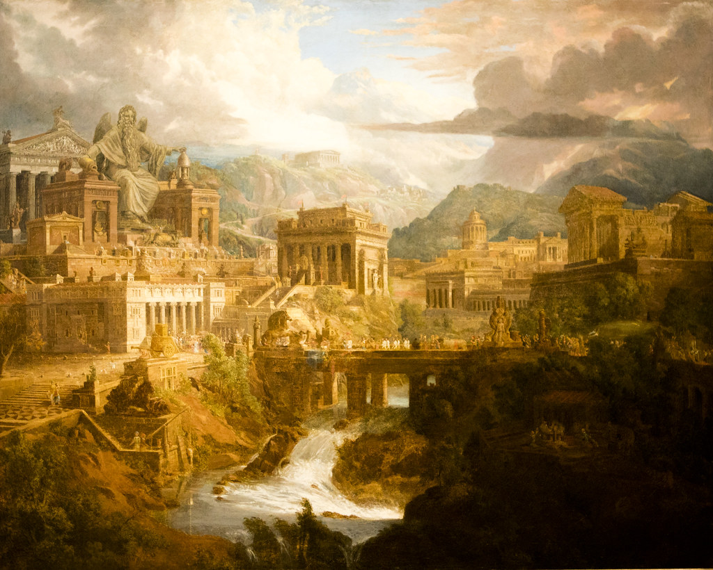

 Когда-то, в Древней Греции, в городе, название которого было дано в честь богини мудрости-Афинах, недалеко от реки Эридан, в небольшом домике, жил мальчик Эрос со своими родителями. Его мать и отец были батраками, им приходилось выполнять самую грязную работу с утра до вечера, не получая за это ни копейки. Маленький Эрос смотрел на то, как мучаются его родители от такой несправедливости и не мог им помочь. Отец Эроса, ранее, работая на очень хорошего человека, который обучал своих подчиненных грамоте, был достаточно умен и рассудителен. Для отца Эроса, образование сына было очень важно, но это могли позволить себе не все. Поэтому, учителем для Эроса послужил его отец, который обучил его счету, чтению и письму. Пока родители уходили на работу, Эрос выполнял дела по дому, а когда появлялось свободное время, он очень любил ухаживать за цветами в небольшом, семейном саду. Но больше всего, он любил свою нежно-голубую фиалку, которую он посадил самостоятельно. У мальчика не было друзей, не было человека, который мог бы его выслушать и понять, он очень нуждался в общении, поэтому, поливая свою фиалку, он разговаривал с ней. Спрашивал о ее самочувствие, рассказывал о своих переживаниях, связанных с родителями. Ему казалось, что она его слышит, что она понимает его, ее тревожат его проблемы и она, будто, задаёт встречные вопросы. И каждый день, на протяжении пяти лет, юноша проводил свободное время со своей нежной фиалкой. Когда Эросу исполнилось восемнадцать, на его деревню напали разбойники. Они поджигали дома, вынося самые ценные вещи, убивали невинных людей. Эросу удалось спрятаться в саду под деревом, а его родителей убили. Мальчик успел сорвать свою фиалку, жертвуя ее жизнью, и бросился в бега. По дороге, его переполняли различные чувства-боль, переживание, тревога, и только его нежная фиалка давала ему небольшую надежду на спасение. Он шёл в неизвестном направлении пять дней и пять ночей. Его мучал голод и жажда. Все самые отвратительные чувства смешались в его голове. Он видел, как погибает его цветок, но кругом не было ни капельки воды. Он чувствовал себя бесполезным в этом мире, не спас родителей, не может помочь даже несчастному цветочку. Эрос потерял силы, обезвоживание юного организма дало о себе знать, он лёг отдохнуть, на так и манящую траву. Погружаясь в глубокий сон, последнее, что он видел перед своими глазами, фиалку, которая уже не могла с ним разговаривать, не могла улыбнуться ему своими лепестками, кажется, ее больше не было рядом с Эросом. Юноша надеялся, что через секунду он погрузится в вечный сон и встретится со своими любимыми мамой и папой, увидит свою нежную фиалку.